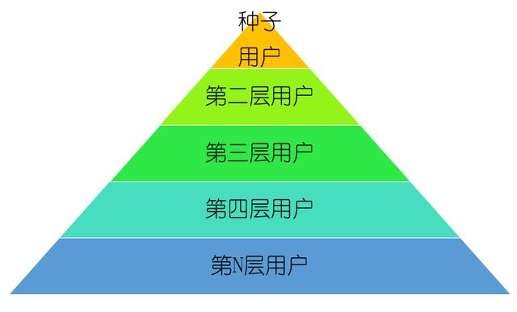

上一周，我帮一个朋友实操了一个项目，通过社群做小规模裂变，然后通过造势营销，销售额1分钟就破了10万块。但是这个项目的完整复盘文章，我会下周发出来。今天，我们谈一个更重要的东西，如何提升裂变的精准度。
想先问大家一个问题，你们做裂变的目的是什么？
简单粗暴的答案：变现。如果有人有其他答案，也可以告诉我，最好让人可以如沐春风一般。
按照正常的运营流程来看，裂变只是整个运营体系中的一个环节，完整的运营体系应该是这样的：
- 种子用户：铺设流量渠道，并获取种子用户，作为后续裂变的启动流量；
- 裂变：进行裂变，增加流量；
- 流量筛选：将裂变的流量进行过滤，筛选出目标用户；
- 用户培育：通过不断提升用户活跃，从而为后续付费转化打下基础；
- 付费转化：用户成为付费用户，企业实现变现。
抛出2个问题，可能有点痛。
小问题：
- 为什么你学习了裂变方法，却还是做不好裂变？
- 为什么你做好了裂变，流量做起来了，却还是变现不理想？
貌似抛出了问题，不分析问题，不解决问题，就有点“耍牛氓”了。下面我做一个完整的分析，并提出几个方法让大家可以拿来就用。
为何需要精准裂变
我对上面有点痛的2个问题做一个回答，如果一句话回答，那就是流量精准度的问题。可以看到：裂变不是单独存在的，往前看，种子用户的精准度决定了裂变的效果；往后看，裂变的效果直接影响最终付费转化。
我对这两点进行一个详细说明。
1. 种子用户
我之前体验了一个运营案例类的社群裂变，进入到群中之后，发现群内全是各种广告。那么大家觉得问题出在哪里？社群机器人有Bug？没有及时踢人？
这是表面现象，问题的本质是这个社群的基础流量有问题。
我们先来看下流量的裂变图：
从图中可以看到，裂变是分为多层的，我见过厉害的，裂变了10几层。但是我们暂且不说10几层的事情，可以看到越上层，对裂变的影响越大，因为一切的流量都是基于上层而裂变出来的。
- 上层的流量，如果不精准，则裂变出来的流量就全部不精准，导致后面付费转化极为困难；
- 上层的流量，如果本身影响力不够，则裂变就会流量很少，这也是很多初学裂变小伙伴，在思考的问题。为什么，自己做裂变时，裂变不出很多流量。因为如果你指望几个还不怎么又影响力的人，发发海报就想裂变，这个不太现实。
2. 付费转化
付费转化不好，会受到裂变后的流量影响，有两个点：流量的数量，以及流量的精准度。
流量的数量：流量的数量不够，总共群里才几十个人，那做什么付费转化？肯定效果不好。
流量的精准度：这里我直接举个例子，比如：我们现在是卖女装的，定位是18~25岁之间的年轻女孩。如果我们基础流量通过广告投放，通过渠道合作等等获得，这些基础流量是裂变活动的基础。但是完成裂变后，我们发现群里大多数男生，或者是30岁以上的女生。
那么请问，这付费转化怎么好的起来？
如何提升裂变精准度
基础流量是因，付费转化是果，我们解决问题应该在因上来做功夫。影响后续裂变流量精准度有两个重要的因素：人、事。
1. 人
人即指，裂变前的基础流量，或者也可以称之为种子用户，有了种子用户才会有后续的裂变。那么你若问我，你们的产品适合找什么样的种子用户，我想说，我也不知道。因为你需要提前思考一个问题：我的目标付费用户是谁？
我们将它称之为付费用户画像，而付费用户画像一定需要和种子用户匹配。你应该清晰知道你的目标付费用户的属性，比如：年龄段多少、收入水平、价格敏感度、他们的共同痛点等等。
我来举个例子，当你打算卖男士用品，那你不应该去宝妈群找种子用户，这个听起来有点奇怪，大家觉得肯定都不会这么做的。但实际中，很多人就是类似这样做的。如果以一种流量思维来做事，什么也不管，有流量就是王道，那只是死路一条。
我来罗列一些方法教你找到精准的种子用户：
找到目标的人：
（1）做裂变前，先想好付费目标用户画像，然后基于用户画像去找人。
（2）朋友圈：当然是一个少不了的渠道，但是朋友圈发怎样的内容，才能吸引到你想要的用户，等下我们在“事”这个小节说明。
（3）微信群：如果你也是卖女装的，别人的微信群也是，那你进去找人可能会被群主踢出去。我的建议是找没有竞品关系，并且又具备你的用户画像的群。比如：我的产品是25~30岁之间的女装，价格有点高，设计风格是非常知性，干练的。那么可以去到一些白领OL多的群，找人，但建议还是和群主先沟通好。如果说去到女装群，或者宝妈群，那就都不合适。
（4）公众号：去公众号有几种方式，一种是在自己的公众号发布文章来寻找种子用户；一种是在和你目标付费用户画像匹配的公众号投放软文；一种是和匹配的公众号进行互推，即你的号推他们号的内容，他们号推你们的内容。
（5）大咖：通过大咖有很多种，有的时候大咖帮你转发一个裂变海报即事半功倍。
但是撩大咖，我给大家3点建议：
- 大咖的属性也得和用户画像匹配，否则过来的流量还是不精准；
- 苦求大咖没用的，想想你可以给大咖什么？一切职场社交的基础就是：价值交换；
- 平时多多积累人脉，但还是有个逻辑，人脉的基础是价值交换，平时要多多想想，你能帮助别人做些什么。
（6）微信外渠道：微信外渠道其实很多，可以投放广告，可以投其他自媒体，但是我这里说个不要钱的方法，四两拨千斤。之前有个案例是这样的。有一个人在北京开了一家湘菜馆，他为了获取种子用户，他提前去微博搜那种在北京的湖南人，然后私信邀请他们来免费品尝家乡菜，结果可想而知，这一批人是种子用户，然后裂变，找到了北京更多的湖南人。
2. 事
事即指，裂变时去到朋友圈等的内容。可以是裂变海报，可以是二维码，可以是话术等等。为了保证裂变的精准度，刚刚有说，要通过基础流量中的种子用户进行控制。但除此之外，也需要通过裂变用的内容进行控制。前段时间很火的玩转社群666，可谓是教科书级的裂变，值得我们每个人学习。
可以看到，这个海报的内容主打的是人脉资源，所以，什么人需要人脉？
任何人都需要，所以进群的有运营、有创业者、有律师等等。所以，如果你要组建一个上文所说的，适合女性白领的衣服群。那就需要让你去到朋友圈的内容从设计上，更加干练和知性。比如：放一些很干练的模特图片等等，这样，喜欢休闲的，喜欢嘻哈的女生就自然不会感兴趣这样的内容，自然不会加群。
我来罗列一下裂变内容需要注意的几个点：
（1）内容的视觉设计需要和你的目标用户相匹配，如果你要组建玩乐群，或者是给一个玩乐类公众号裂变拉流量，那么朋友圈的内容也需要设计的很玩乐，不能说使用工具随便找一个好看的模板即可。
（2）发朋友圈海报等内容时，话术也需要斟酌，最重要的是：用你想要的圈子的言语，击中他们的痛点。比如：你需要为宝妈群拉新，那朋友圈的话术就不可以太正式，多些，亲，么么哒之类的话。
那么怎么击中用户痛点？
这取决于你对目标付费用户画像的研究。
（3）福利需要慎重考虑，还是说回玩转社群666的裂变，夸张一点说，有个六度人脉定理，说你想要找的任何一个人，哪怕是美国总统，最多通过6个人就可以找到。所以，为什么，基于人脉的裂变，没有吸引到东哥，马云等大佬转发？
虽然夸张一点，只是为了更能说明情况，因为人脉的福利根本就不是那些顶尖大佬需要的。再比如：你需要拉新中产用户，那么福利是3元红包，那可能一点效果都没。
总结
裂变过程中，要先把一切运营流程都想清楚了，再做裂变也不迟。裂变会受到前期基础流量精准度的影响，也会影响后续的付费转化，这些都是一体的。
所以这篇文章通过6种人的方法和3种事的方法教你，如何在裂变中，能够提升流量的精准度，从而为后续付费转化打下基础。
作者：活动盒子产品总监Jackie
本文由 @活动盒子 原创发布于人人都是产品经理。未经许可，禁止转载
题图来自Unsplash，基于CC0协议


你好，请问怎么联系你